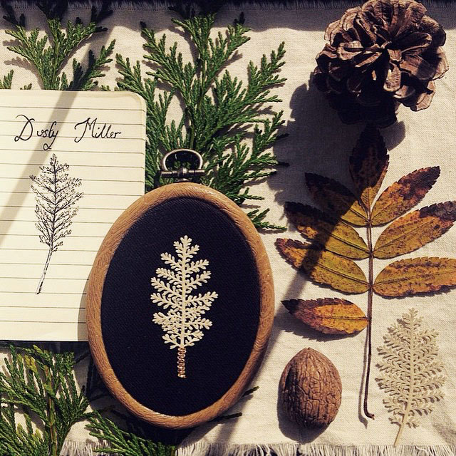

The Olde Sewing Room, somewhere in Bedfordshire, England. Light filters in but leaves some corners dark. Piles of books, boxes of lace, scatterings of feathers and pebbles and leaves, all quietly clamour for space. Mary, aloof in all her mannequin splendour, looks on with unseen eyes as Humayrah Bint Altaf weaves memories into skeins of gold thread and lets her needle gently pierce through fabric, in and out, in and out, leaving stories in the stitches.
At least, that’s the picture my mind pieces together from the images and words that Humayrah shares with me. She tells me how what began as a foray into the world of fashion design quickly became a detour back to an old love – embroidery.
“I began embroidering at the age of 14 after seeing my grandma lovingly make crocheted gifts for friends and family,” says Humayrah. “I have fond memories of spending my school holidays in her home. The duck egg blue walls, hand-dyed silk saris that neatly lined her wardrobe, even the soft floral scent of her saris are still fresh in my mind. It was here that my heart became entwined in needlework and all things handmade.”
Humayrah says she believes that everyone is on a personal journey to Allah (SWT), and hers began while studying fashion at the University for the Creative Arts in Surrey. By the time she was in her second year there, she became discouraged by the competitiveness of the industry.
“The constant expectation to imitate and embrace the forever changing trends on the catwalk left me feeling like I was losing my identity as a Muslimah. After much patience and prayer, I was blessed with the opportunity to study hand embroidery at the Royal School of Needlework in Hampton Court Palace. In my two years there, I developed my skills in traditional hand embroidery techniques like goldwork and silk shading, and my love and appreciation for exquisite craftsmanship blossomed.”
Her work seems to weave together the old with the new. “My grandparents’ belongings; lost, old objects, letters from loved ones, leaves and twigs I stumble across on evening walks, all touch me. The chiffon scarves my grandma used to crochet for me, her kohl applicator, her laces and trims; her rusty, steel scissors are all very dear to me. Alhamdulillah, I am able to find poetry wherever I look, but trying to detach myself from constantly feeling an attachment to material things is a personal struggle of mine. The very nature of this Dunya is transient, and it can sometimes feel absurd to tie yourself so tightly to things that were never meant to last. I somehow disagree with collecting just for the sake of collecting, but I strive to transform old things and make them live and be loved again.”
In Humayrah’s world, even the inanimate has personality. She names her embroidered pieces after people, and her mannequin may as well be her kindred soul. “One way I choose to ‘live’ with old pieces is by naming them. Mary, my mannequin, is a fine example. Named after my love for Mary Poppins and Mary my ‘English name’ for times when my colleagues couldn’t pronounce Humayrah. Having a mannequin is quite like having a sister, but Mary always understands and never ruins your clothes!
From the pictures she shares on Instagram and her listings in her Etsy store, it is easy to see that Humayrah is greatly inspired by the natural world. I ask her about where she lives, the sights and sounds she encounters, the feelings she carries back and how it all informs her work.
“Who is a better crafter than Allah? The influence of His natural creation is something that is woven throughout much of my work. I’ve always loved discovering beautiful things and enjoy wandering through the woods near my home, where I gather leaves, twigs, feathers and other ephemera to bring back home and preserve. I also like to incorporate the treasures I find into my embroideries and with each piece, I feel that a part of me has been embedded into my work. My favourite embroidery technique has to be goldwork because of the way the metal threads vary in colour when seen in different lights and from different angles.”
And amongst all this are the words. Words woven into thread, exuding spirituality. “I am a ‘word collector’. Unusual words with wondrous meanings fascinate me. My favourite word at the moment is sonder. John Koeng describes this noun in his Dictionary Of Obscure Sorrows – “The realization that each random passerby is living a life as vivid and complex as your own – populated with their own ambitions, friends, routines, worries and inherited craziness – an epic story that continues invisibly around you like an anthill sprawling deep underground, with elaborate passageways to thousands of other lives that you’ll never know existed, in which you might appear only once, as an extra sipping coffee in the background, as a blur of traffic passing on the highway, as a lighted window at dusk.”
Words should be celebrated, says Humayrah. “Take kawaakari for example – a Japanese word meaning the gleam of last light on a river’s surface at dusk; the glow of a river in the darkness. I feel there is a spiritual mystery hidden in the folds of language, and it’s important to hem these extraordinary blessings with thankfulness. An ayah that I find incredibly stirring is when The Most High says: …A goodly word is like a goodly tree, whose roots are firmly fixed and its branches reach to the heaven…”
“Whenever I imagine Paradise, I imagine casting my eyes upon a magnificent library of some sort. Intricate leather etchings on golden bindings are scattered all over my sewing room. I find comfort in discovering links between past and present, and the nostalgic aroma of old books.”
There’s one particular book that peeks through several photos that Humayrah shares online. “The Girleen by Edith Johnstone is a cherished vintage novel I discovered on one of my weekly visits to boot sales. It has the most perfect handwritten note that always touches me – ‘Dorothy Bwidkin, Edale Day School, 1910 Prize for attendance.”
“There are times when I stitch words into weathered pages – emotions, experiences, sometimes wishes. This is something quite personal that I haven’t shared with others yet. I guess stitching words into these pieces means that their story and mine have become intertwined, like a journal really – another reason I have become attached to books. Often, the connection between words and embroidery is not apparent to anyone except me.”
And her atmospheric photography – is that by chance or by design? “I believe in storytelling through imagery, the comforting effect a word or photograph may have on people. A single image with a few concise words woven together is enough to whisk me away and lead me to create a certain composition. I try to keep my work room, The Olde Sewing Room, looking as atmospheric as possible, helping me to ‘get in the zone’ whilst embroidering and photographing. Often, happy accidents happen in The Olde Sewing Room through a mixture of disorder and serendipity. I have an obsession for dark, cluttered rooms thus parts of the Olde Sewing Room are dim and unlit but entirely filled to the brim with feathers, shells, broken twigs, bowls of beads, bundles of metallic threads, handcarved wooden printing blocks and lots of clocks! This is where I feel my most authentic, happiest self, especially as I am alongside Mary, my mannequin.”
“Take your needle, my child, and work at your pattern; it will come out a rose by and by. Life is like that – one stitch at a time taken patiently and the pattern will come out all right like the embroidery” – Oliver Wendell Holmes.

Find Humayrah and her treasures at www.theoldesewingroom.etsy.com, and at https://instagram.com/humayrah_bint_altaf
Azra Momin paints, makes jewellery and illustrates books, not necessarily in that order. In previous eras, her job titles have included interior designer, content editor, freelance writer and teacher. Mostly though, she likes to spend time with her favourite critics, her husband and daughter; read mystery novels and dream about living in an earthship.
READ MORE: